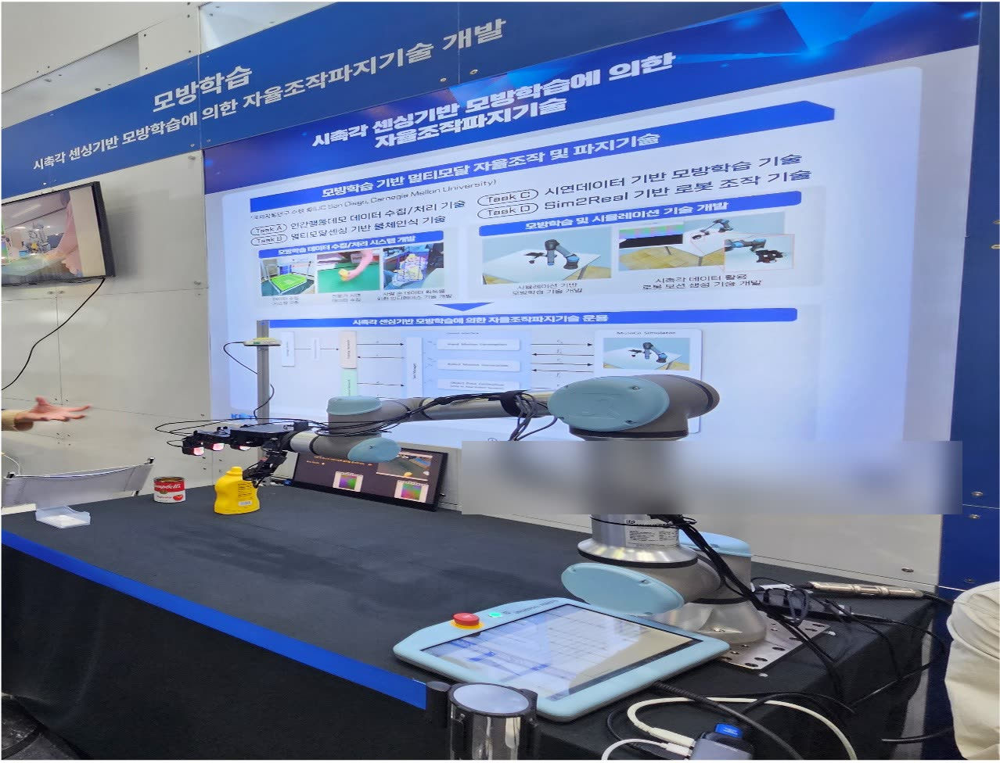

Vision, tactile and force/torque streams buffered into one control loop —
the 2024 single-arm framework, demonstrated live at RoboWorld 2024.
200 Hzcontrol loop, decoupled from policy
2 × 7DoF arms + 16-DoF hand
53%Relocate success · RoboWorld 2024
Overview
Vision, touch and force have to share one control loop, and each arrives on its own clock.
This is the framework that holds them together — first a single-arm system shown live at
RoboWorld 2024, then rebuilt for a dual-arm platform where learned policies, teleoperation
and a safety layer all run through the same command path.
2024 — single arm
Asynchronous sensor streams and I/O contention were what degraded real-time control, so the
fix was structural: sensor acquisition and control computation went into separate processes,
with state buffering and data synchronization absorbing the rate mismatch — the control side
reads a current snapshot instead of blocking on a sensor. 53% success on the Relocate task.
2026 — dual arm
Two xArm7 arms with a 16-DoF Allegro hand and a 6-DoF Inspire hand,
fingertip tactile sensors and RGB cameras. Two arms are not twice one arm: a buffer that was
merely current now has to be consistent across arms, and a bad command is something
the robot can do to itself.
Rate separation. Control 200 Hz, policy 30 Hz, teleoperation 60 Hz,
over devices reporting at 250 / 333 Hz. The policy publishes chunks and the control
loop interpolates, so a slow policy step cannot stall the arms.
Consistency under one lock. A latest-only state buffer whose single-lock
snapshot() keeps an observation from mixing time points, and both arms'
commands written in the same tick so two-arm motion stays synchronized.
Sim/real parity. Every device is one interface with a real and a MuJoCo-backed
implementation chosen by config, so identical control, observation and safety code runs
in both; tactile readings are normalized across sim and real from a percentile
calibration.
Vision Pro teleoperation. Delta end-effector tracking for the arms, geometric
retargeting of tracked finger frames onto the Allegro's 16 joints — sharing the command
path with the policy, blended by weight.
Imitation learning on the platform
ACT. Pick-and-place rollout on the dual-arm platform, running through
the same command path teleoperation uses.Flow matching. The same task under a flow-matching policy — swapped by
checkpoint, with no change to the control stack.
Safety shield
A learned policy can command the arm into the robot's own torso or into the table. A
marker-based shield sits between policy and command buffer, computing clearance from arm and
hand surface markers to torso and tabletop proxies, on three contracts:
What is checked is what executes — the gate does the 200 Hz interpolation and
joint clipping itself, so the inspected array is the one the device receives.
Rejection is atomic — an unsafe chunk never partially enters the command buffer.
Recovery needs a human — the stop latches; clearance recovering on its own does
not resume motion.
Margins are staged — warning 50 mm, stop 30 mm, recovery 40 mm — so stop and
release cannot chatter against each other.
Torso stop. The arm is commanded toward the robot's own torso and the
shield halts it at the margin.Table stop. The same shield against the tabletop proxy, stopping the
hand before contact.
RoboWorld 2024

Live demonstration. The Relocate task on the platform at RoboWorld 2024
— 53% success, vision, tactile and force in one loop.
Stack
Python · multiprocessing · xArm7 ×2 · Allegro Hand · Inspire Hand ·
tactile sensing · MuJoCo · Apple Vision Pro teleoperation · ACT · flow matching